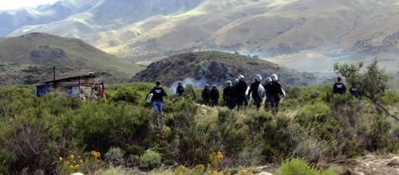

Real Chubut - Agencia de Noticias


La Lof rompió el silencio: “Santiago estaba agarrado de una rama, con el agua hasta las rodillas, y los gendarmes arriba”

La Lof en Resistencia de Cushamen rompió el silencio contó los detalles de la represión de la gendarmería realizada el 1º de agosto donde desapareció el artesano Santiago Maldonado.
El testimonio lo obtuvieron en exclusiva los colegas de Revista Cítrica, quienes desde el cierre del diario Crítica de la Argentina en el año 2010 conformaron una cooperativa que le dio vida a Cítrica.
En la tarde del domingo llegaron a la Lof en Resistencia de Cushamen. A unos doscientos metros de la tranquera, sobre la ruta 40, un micro y una camioneta de Gendarmería vigilaban. “A la vuelta los van a parar y les van a pedir documentos. Así lo hacen con los que se acercan al territorio”, les advirtieron antes de salir desde El Bolsón.
Luego de una charla en la resistencia donde hablaron de diversos temas y donde les pidieron si podían contar su versión de los hechos le dijeron: “No lo tomen a mal. Pero si pueden espérennos en el auto, del otro lado de la tranquera. Vamos a bajar a hablar sobre esto que nos proponen. No estamos haciendo entrevistas, queremos preservarnos. Pero lo consultaremos con otros peñi y nos acercaremos a decirle lo que decidimos”.
Unos 45 minutos después, llegó caminando otro peñi. Vestía jeans y un poncho marrón con retazos verdes. Su mano y su voz eran más jóvenes. Ya dentro del auto, empezaron a dialogar.
¿Cómo fue la previa a la represión y a la desaparición de Santiago?
Primero hicimos un corte de ruta aquí para denunciar la prisión política de Facundo, las detenciones y violencia que habían sufrido los peñi y las lamien en Bariloche: a las once de la mañana decidimos saltar el alambrado y como forma de comunicación cortar la ruta. Repartimos panfletos, se conversó también con los camioneros de la situación en Bariloche. Recién alrededor de las cinco de la tarde, se hizo presente Gendarmería, con un (camión) Unimog y tres camionetas llenas de efectivos. Se bajan fuertemente armados en el cruce y empiezan a descender para donde nosotros nos encontrábamos. Cuando están a una distancia de cuarenta metros, empiezan a disparar y entonces activamos nuestro grupo de autodefensa.
¿Cómo se defendieron?
Con ondas de revoleo y piedras. Así logramos repeler la agresividad que había mantenido Gendarmería en ese rato. Se van unos kilómetros más atrás y ahí nos leen por altoparlante una orden de desalojo firmada por Otranto y nos dan dos horas para desalojar la ruta.
¿Entonces existió una orden?
La leyeron por altoparlante. Nosotros hasta el día de hoy desconocemos si existió realmente. No sabemos bien qué decía la orden tampoco, no se entendía bien pero decían que era una orden firmada por Otranto. Nosotros volvemos a la ruta. Justo había un periodista de canal 4 que había venido a cubrir el corte, quien se acerca hasta los gendarmes y le solicita la orden de allanamiento, la cual le es negada. El muchacho les insiste que como la orden era de conocimiento público podía hacerle una toma con la cámara y se difundía. Pero no se la mostraron. El periodista volvió, hizo una toma acá, despejamos la ruta y entramos al territorio. Ese día supuestamente quedaba en libertad Facundo y hablamos mucho para ver qué estaba pasando con la gente en Bariloche. Teníamos dos focos importantes y aquí tampoco sabíamos qué iba a pasar.
¿Y qué pasó?
No se acercó nadie, no pasaba ni un auto, porque habían desviado el tránsito allá arriba, en lo que es el cruce a Cholila y Epuyén, y a acá en la subcomisaría de Leleque, por Cholila también.
¿Habían liberado la zona?
Sí, para que no entrara nadie, como pasó en la represión de enero. Despejaron la ruta y quedó tierra de nadie. Alrededor de las cuatro y media de la mañana aparece un contingente muy grande de Gendarmería. Llegamos a contar 21 vehículos. Sacaron un pino que habíamos dejado en la ruta y se apuestan ahí, donde están ahora. Y a las seis y cuarto se acercaron unas camionetas de Gendarmería con las luces apagadas. Nosotros escuchamos los motores desde el sector de guardia y cuando alumbramos, inmediatamente empiezan a disparar. Pensamos en un primer momento que se nos iban a meter así que tomamos posiciones y empezamos a defendernos como antes.
¿Gendarmería disparaba con balas de plomo?
Sí, con nueve milímetros y escopetazos. No es la primera vez que nos ha tocado esto. Y uno con el solo ruido ya se da cuenta. Un escopetazo suena mucho más fuerte, y en cambio la nueve milímetros te silba en la oreja. Nos estaban cazando. Alumbraban para dentro del campo y donde nos veían nos tiraban. Estuvieron así como 15 minutos hasta que se fueron.
El Piltriquitron, imponente y con sus picos nevados minutos atrás, deja de verse por la bruma pero fundamentalmente por la noche que avanza. Las ventanillas se empañan en los bordes y muy cada tanto se escucha la velocidad de un auto. En el cruce se ven las luces del micro donde los gendarmes estarán hablando o mirando sus celulares. Aquella noche, en cambio, eran muchos más y no estaban tan tranquilos.
Aquella noche, estaban preparando la cacería.
¿Cómo fueron los hechos del día siguiente?
Estábamos bastantes desgastados pero volvemos a entrar a la ruta a eso de las once de la mañana, porque hay algo que no se puede callar. Y por más que repriman y esas cosas uno utiliza la forma de difusión que tiene a mano. Y en ese momento era la ruta. Inmediatamente bajó el contingente de unos cien gendarmes y empezaron abrir fuego sin hacer asco a nada.
¿Ahí ustedes se vuelven a replegar y se meten en el territorio?
Primero los enfrentamos. Les tirábamos piedras y le gritábamos que se fueran. Que ellos no tenían nada que hacer acá, porque nosotros estábamos ejerciendo nuestro derecho a la protesta y estábamos denunciando lo que el Estado estaba haciendo con nosotros. Uno trata de convencer igual, pero sabemos que ellos tienen la cabeza lavada lamentablemente. Siguieron tirando. Formaron una línea a lo ancho de la ruta. Los del medio con escopetas y a los costados, dos o tres gendarmes tirando con nueve milímetros. Nos replegamos al territorio. Pensamos que sólo venían a desalojar la ruta y que entonces iba a cesar el fuego. Pero siguieron tiroteando para adentro. Se vinieron para el alambrado. No los dejábamos entrar hasta que nos atraviesan un Unimog acá al costado, se apuestan cinco tiradores atrás y empiezan a tirar.
La voz se entrecorta, se detiene. En la oscuridad empañada del auto sólo se escucha una respiración más fuerte. En silencio, nos aguantamos un llanto que en un rato será inevitable cuando hablemos de Santiago. ¿Dónde carajo lo tendrán?
“Dejemos, seguimos después”. Pero el peñi quiere continuar, consciente de que la verdad, que este relato silenciado, tiene que llegar a más personas: “Empiezan a tirar, tirar, tirar, mientras los otros gendarmes se dispersan por el resto del alambre y comienzan a ingresar por distintas partes. Hasta que el Unimog hace una pantalla acá, rompen el candado de la tranquera, y ahí entran todos corriendo al grito de ‘agarren a uno, agarren a uno’. Y el jefe del operativo gritaba: ‘Tirales, Tirales’”.
Fue mucho peor que la represión de enero.
Sí, fue algo que no se había vivido nunca aquí. Entraron a punta de pistola disparando y disparando. Aguantamos todo lo que pudimos hasta que en un momento hicieron un ingreso todos los efectivos. Y ahí nos corren hasta el río, unos setenta metros. Donde nos tirábamos por diferentes partes, por donde podíamos, porque la lluvia de balas no cesaba. Ahí es donde el compañero Santiago no logra cruzar. Porque mientras nosotros íbamos nadando por el río, la Gendarmería igual nos seguía tirando adentro del agua. Nos tiraban con nueve milímetros, con escopetas y con piedras algunos. No les importaba nuestra vida a la Gendarmería. Ellos vinieron a matar a uno acá. El compañero nadó hasta una parte y al ver que las piedras llovían de arriba y los tiros no cesaban, decidió volverse para la orilla. Y ahí es donde hay otro peñi que lo ve al compañero Santiago agarrado de una rama, con el agua hasta las rodillas y los gendarmes arriba. Y después hay otro peñi más que también ve a tres efectivos de la Gendarmería que están golpeando a alguien que no logra reconocer.
Era Santiago…
Y sí.. Ahí sale el Unimog cargado. Sube hasta el cruce de allá. Y vemos cómo se atraviesa una camioneta blanca junto al Unimog. Varios gendarmes hacen una pantalla para que no se vea lo que están haciendo. Y la camioneta blanca de Gendarmería sale para allá, como rumbo a Esquel. Por eso no hay la menor duda de que se lo llevó la Gendarmería. Que ellos lo tienen y que ellos son los responsables de que el compañero no aparezca. Ellos y todos los medios de comunicación que también han aportado a la difamación no sólo de la comunidad sino también de nuestro proyecto de vida. Porque aquí no es que solo se ve a unas personas tirar piedras y cortar rutas. Sino que aquí hay un proyecto de vida. Como decía Santiago: “Es un gusto estar con los terroristas. Los terroristas de la verdura”, decía y se reía.
¿Por qué de la verdura?
Porque habíamos estado comiendo verdura el día anterior, cuando él llegó. Y le contábamos que estábamos plantando ajos y otras cosas. Él nos había acompañado en otras represiones anteriores. Y esa noche habíamos estado conversando bastante.
Nos contaron que Santiago es alguien de mucha conciencia, y también de muy buen humor.
Sí, el humor no le faltaba al compañero. Igual uno lo conoce poco, y siempre nos vimos en estos contextos de represión, en los que las charlas se tornan más serias. Pero igual uno va viendo la forma de vida que tienen los compañeros, cómo es el compañero, cómo se desarrolla. Y él, por más que estemos hechos de goma, cansados y esas cosas, nos hacía reír bastante. Y esa noche nos había hecho reír.
¿Qué les decía?
Cosas… De hecho esa noche nos dijo que si un día él no estaba, teníamos que decirle LHT. Viste que ahora muchos se ponen nombres con siglas. “¿Y eso qué es?”, le preguntamos. “Las hice todas. Así tienen que decirme”. Y así fue, él compañero las hizo todas. Y si es que la Gendarmería lo mató, murió como un gran luchador social, consciente de la causa nuestra, con sus principios. Y así lo recordamos.
Acá lo conocen como El Brujo, ¿no?
Sí, El Brujo y también El Vikingo le decíamos. El decía que tenía descendencia vikinga, siempre hablaba de eso y que le gustaba mucho el mar, como a los vikingos. De hecho tenía la barba así, y nosotros en joda le decíamos que se la tenía que cortar porque iba a asustar a cualquiera. Ese día también jodíamos que si venía la represión lo mandábamos al Vikingo adelante, que con esa barba asustaba y capaz no nos reprimían tanto. Nos reímos mucho esa noche. Santiago nació en 25 de mayo y aunque no era mapuche era muy consciente de nuestra historia y se ocupó de recuperar también la del lugar donde vivía. Y después anduvo por todos lados, acompañando luchas. También conversamos esa noche de lo sorprendente de la resistencia de los pescadores allá en Chiloé.
¿El estuvo allá?
Sí, estuvo acompañando a los pescadores. Y a uno lo ponía contento conversar de esas cosas, porque cuando conversás con esas personas que andan haciendo cosas, acompañando y poniendo el cuerpo, es como que uno encuentra su par, porque uno también acá está poniendo su cuerpo, su cabeza, su consciencia, y sabe lo que arriesga. Y él también era consciente de eso. Era consciente de que estábamos en una zona en conflicto. No era la primera vez que venía en una represión y siempre decía que estaba orgulloso de la gente y los jóvenes que luchaban.
Fuente: Latitud Sur
PUBLICIDAD